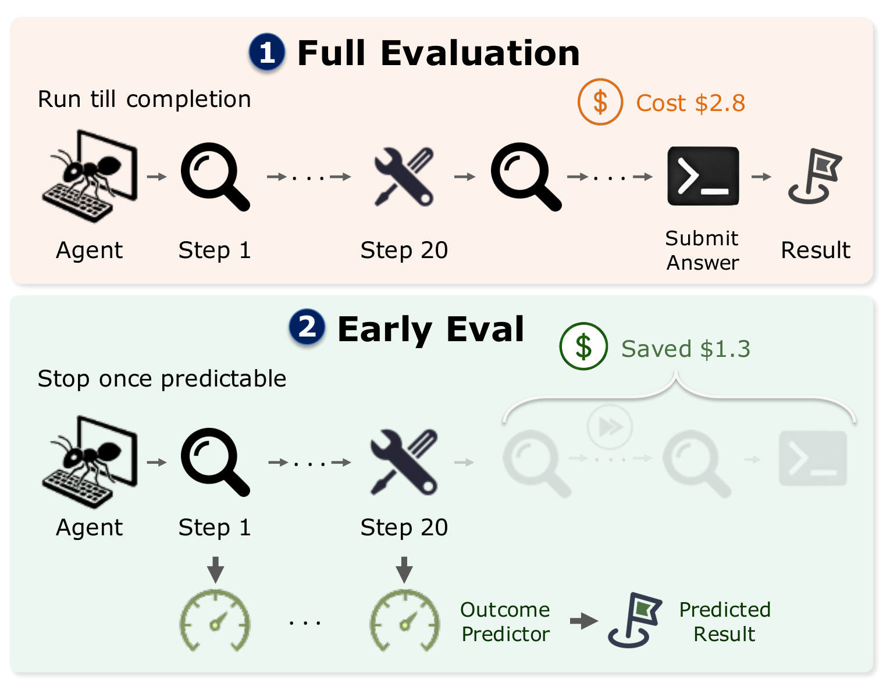
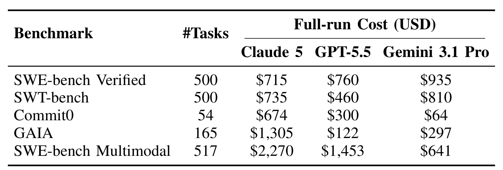
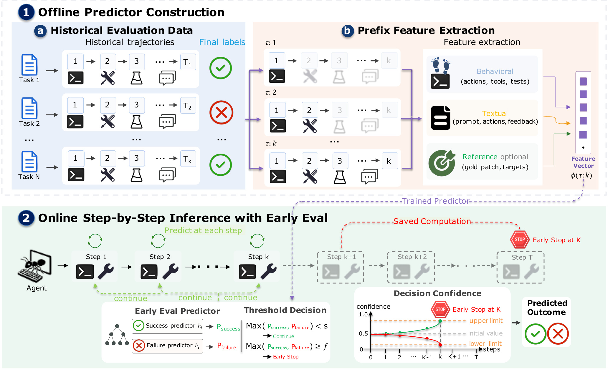
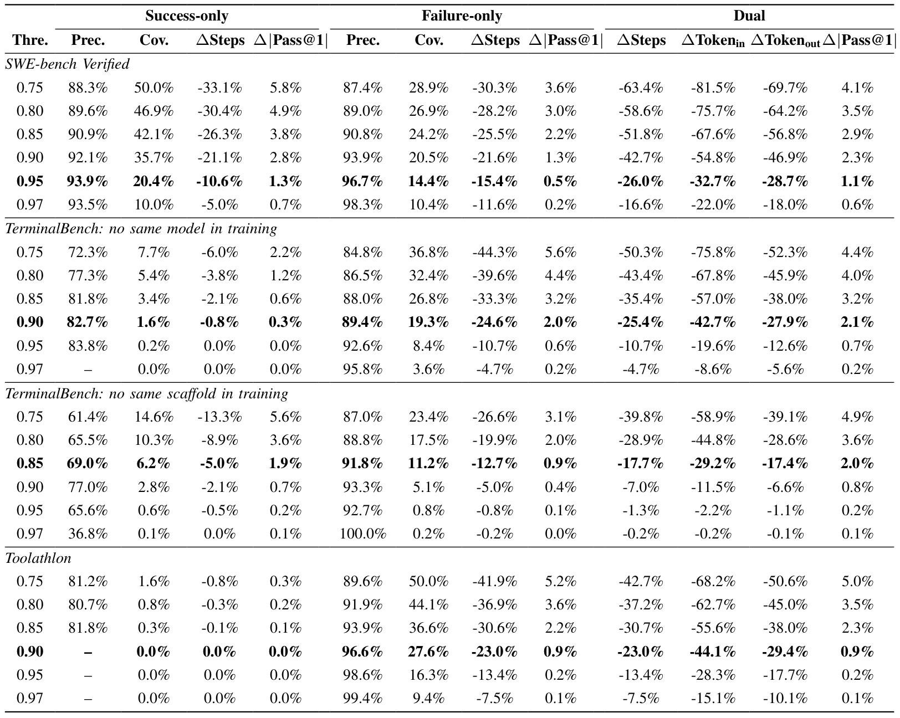
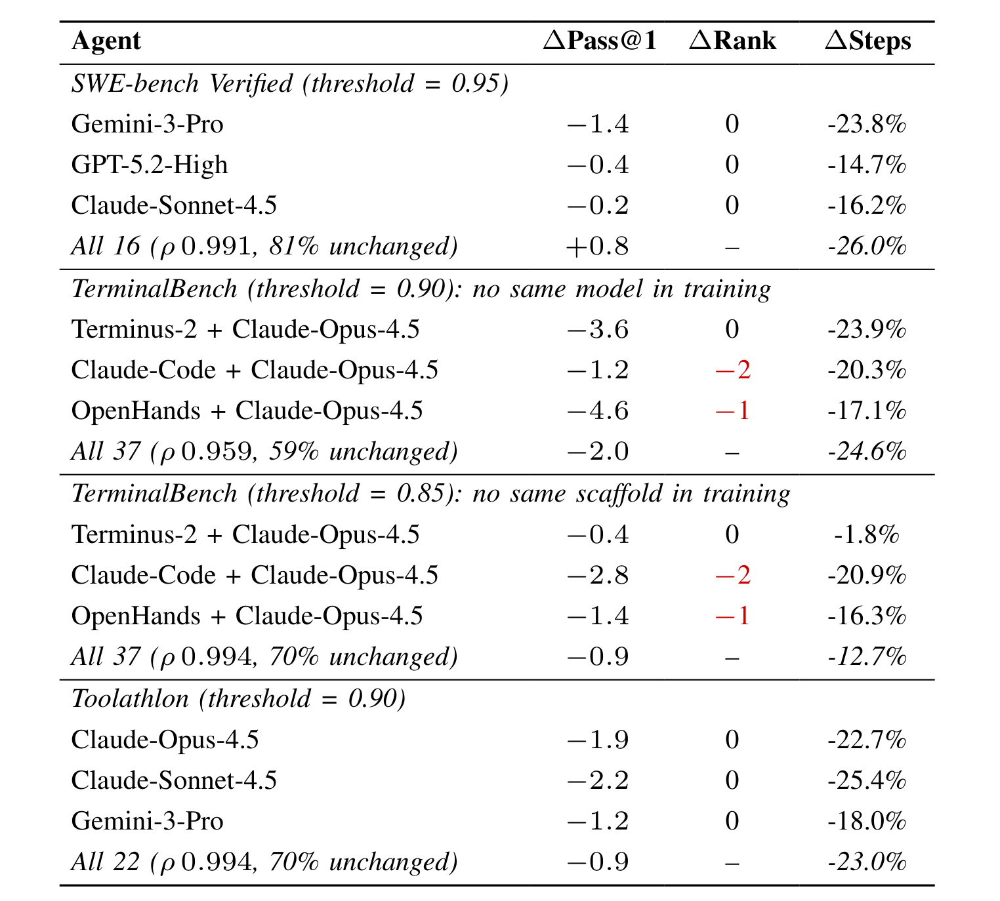
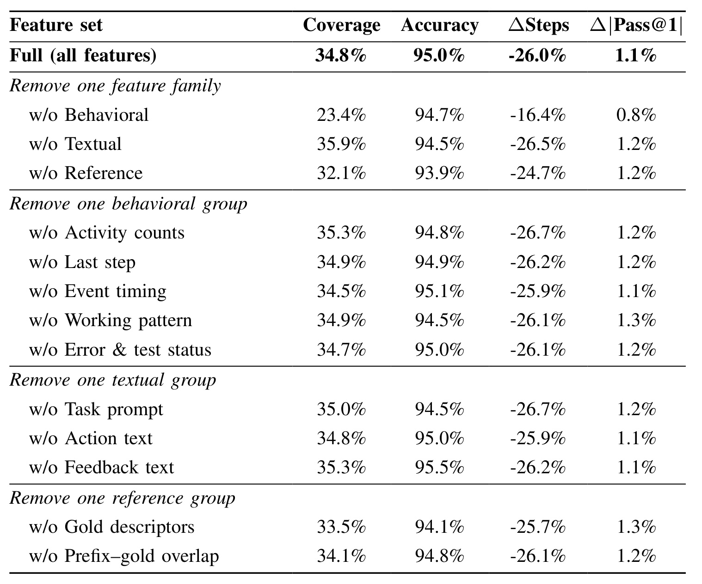
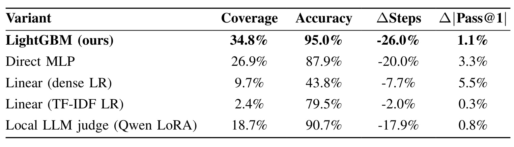

EarlyEval：用早期结果预测降低 Agent 评测成本
《EarlyEval: Cheaper Agent Evaluation via Early Outcome Prediction》由 Yuling Shi、Zhensu Sun、Junsen Dong、Chengcheng Wan、David Lo 和 Xiaodong Gu 完成，一作单位为上海交通大学，合作机构包括新加坡管理大学、华东师范大学和上海创新研究院。论文于 2026 年 9 月 2 日以 arXiv v1 公开，本轮核验未见论文声明顶会录用信息。论文入口是 arXiv:2609.02783。作者的 EarlyEval 仓库 已可公开访问：截至本次核验，它包含训练、测试、特征工程、消融、policy replay 和表格生成代码，但明确不包含原始轨迹、中间 parquet、已训模型、预测产物和论文表格，且 GitHub 元数据未显示开源许可证；因此它是“可检查的 code-only release”，还不是下载即得全部数据的一键复现包。
LLM agent 的基准评测需要在每个任务中连续读取环境、调用工具和修改策略，单次完整执行已可以花费数百到数千美元，研发迭代又会反复支付这笔成本。现有 benchmark distillation 主要减少要跑的任务数，却没有降低被保留任务的单任务执行成本；而很多轨迹在自然结束之前，已经从中间行为显露出最终成功或失败。
1. 背景和问题
1.1 评测成本有两个正交方向
一个 agentic benchmark 的成本可以粗略分解为“任务数量 × 每个任务的轨迹成本”。过去的高效评测工作主要攻击第一项：从大型测试集中选代表子集，或用少量 anchor tasks 估计全量排名。EarlyEval 选择第二项：任务仍然在评测集中，但当它的结局已可靠推断时，不再运行剩余交互。两者可以叠加：先减少任务，再减少每个被保留任务的步数。
关键不是让 agent 自己觉得“我已经做完了”，而是让一个独立的评测代理只看当前轨迹前缀，判断全程结果。成功信号可能是代码 agent 已修改到正确文件和 API，之后只是重复测试；失败信号则可能是不断重试相同操作、错误计数不降，或未编辑便提交。这些是已发生的过程证据，而不是对 agent 内在自信的猜测。

Figure 1 的上半部让 agent 经过检索、修改、再检索和最终提交，记录真实结果；下半部保留前 20 步，从中间状态预测成败，然后淡出不再执行的尾部。图中 2.8 美元与节省 1.3 美元是说明性个案，不是全部 benchmark 的平均成本。更重要的是，EarlyEval 输出的是“预测评分”而不是试图让当前 agent 改正答案；所以它优化的是评测过程，不会直接提高 agent 能力。在工程上，这也意味着被截断轨迹不能继续用于分析最终 patch 的细节；它更适合快速迭代比较，而不是一切研究问题的通用替代。图中也没有表示“到第 20 步必停”；真正规则是从每一步输入当前前缀，只在某个成败阈值首次被跨过时停机，否则仍会自然执行到完成。
1.2 “贵”不只是 token 总数
论文引用 OpenHands Index 在 2026 年 6 月的记录，强调一次完整评测已经是显著的工程预算。成本来自多次模型调用、逐步增长的 prompt 上下文、环境容器、工具执行和增量生成；若一个研发团队每次调整 scaffold、prompt 或 base LLM 都重跑一遍，开发循环会把单遍开销放大数十次。

Table I 是一张动机表，不是 EarlyEval 的节省结果。表中 SWE-bench Verified 有 500 个任务，三种模型单遍成本为 715、760 和 935 美元；SWE-bench Multimodal 的对应数字达 2270、1453 和 641 美元。Commit0 只有 54 个任务，但前两种模型仍分别达 674 和 300 美元，说明任务数不能单独解释成本，轨迹长度和上下文膨胀同样关键。这些数据是特定 agent、模型、价格与 2026 年 6 月时点的快照，不能当成今后任意执行的固定报价。它的合理用法是建立数百到数千美元的量级感，然后再用 Table III 的实验评估 EarlyEval 真正减掉了多少。此外，表格没有列出同一评测在不同并发度下的 wall-clock，也没有拆出模型 API 之外的环境成本；因此它支持“成本值得优化”，却不足以单独核算某个团队的最终节省金额。
1.3 论文要保住的不是单一“准确率”
评测代理必须同时满足三层要求。第一，对被截断轨迹的成败预测要准；第二，它不能因为只截断极少数“容易判断”任务而获得看似漂亮的精度，所以必须同时看 coverage 与实际节省；第三，评测的用途常常是比较 agent，因而早停后的每个 agent resolve rate 与整体排序也要稳定。论文没有把其中任意一项当成全部结论，而是用阈值扫描展示成本-保真折中。
这个定位也决定了适用边界：EarlyEval 目标是为日常研发迭代提供便宜而高保真的相对信号，不是替代用于论文 headline 或正式排行榜的完整执行。论文自身承认早停对 resolve rate 会带来约 1–2 个百分点的系统偏差；在需要可引用绝对分数、任务级完整错误分析或最终验收时，仍应让 agent 跑到自然结束。
2. 方法
2.1 从完整轨迹拆出可学习前缀
给定 benchmark 任务 (t) 和 agent (A)，完整执行产生事件序列。这里的 event 不是纯文本思维链，而是评测器能够从运行日志稳定读取的动作与观察；把监督目标建立在可记录事件上，才能让预测器独立于被测 agent 的内部实现，并在不修改其推理循环的前提下作为外部控制层接入：
符号解释：(e_k) 同时记录第 (k) 步的动作与环境反馈，(T) 是自然结束步数，(y=1) 表示最终成功，(y=0) 表示失败。普通评测必须执行到 (T) 才能得到 (y)；EarlyEval 在 (k<T) 时就尝试用前缀代替后续执行。
符号解释：(\tau_{:k}) 是轨迹到第 (k) 步为止的部分，(phi) 把变长事件序列映射为 (d) 维定长特征。同一条完整轨迹可以产生 (T+1) 个前缀，所有前缀都承接最终标签 (y)。长轨迹因此天然产生更多训练样本；为避免它在 loss 中占据不成比例的权重，论文为其中每个前缀设置：
符号解释：(w_k) 是第 (k) 个前缀的样本权重。一条轨迹的所有前缀权重之和恒为 1，从而让 20 步和 100 步轨迹对总目标函数的贡献可比。论文还丢弃低于 10 步的轨迹，理由是它们往往没有足够过程信号；这个过滤会改变研究所覆盖的任务分布，复现时应保留。
2.2 行为、文本与可选金标特征
Behavioral 特征不是一个简单“已跑步数”，而是覆盖活动计数、最近一步、关键事件时机、工作节奏和错误/测试状态。其中重复 action/search/view、长时间不 edit、未 test 即 submit、提交后又继续 edit、测试失败数是否下降，都是最终结果之前可见的进度信号。这些特征不需要理解特定代码库的正确答案，所以是跨 benchmark 的基础。
Textual 特征把任务描述、全部/最近 action、全部/最近 feedback 分块向量化。论文先用 word unigram/bigram TF-IDF，再用 Truncated SVD 降维：任务 prompt 是 64 维，action 与 feedback 各由两块 64 维表示构成 128 维。分块处理避免“当前错误”被超长历史文本淹没。Reference 特征只在有 gold solution 时使用，包括 patch 规模、文件、API、测试名等描述，以及当前前缀与 gold 在文件/符号/测试上的 Jaccard 重合和命中数。
Table II 让“轻量预测”的内涵更具体：Behavioral 共列出 37 个活动计数、11 个最近步特征、18 个事件时机特征、32 个工作模式与 17 个错误/测试状态；Textual 部分是 64+128+128 维；Reference 部分有 28 个 gold descriptors 和 54 个 prefix-gold overlap 特征。它不表示所有维度同样重要，而是说预测信号被分散在多个子组。表中 Reference 的“可选”是研究设计的必要边界：SWE-bench Verified 有人工 patch 与测试目标，TerminalBench 和 Toolathlon 却不发布任务级参考解，后两者必须只靠行为和文本运行。因此，若要将 EarlyEval 用到新 benchmark，首先应检查历史轨迹格式与工具事件映射，而不是假定金标特征一定存在。
2.3 双预测器与分折内概率校准
EarlyEval 在同一特征向量上训练两个 LightGBM：成功头 (h_+) 以 (y) 为目标，失败头 (h_-) 以 (1-y) 为目标。两个模型共享超参数配置，却各自拟合和校准；这样既能利用树模型处理计数、布尔、类别与压缩文本特征的非线性交互，也避免为了早停判断在每个 agent 步骤额外调用一个大语言模型。
符号解释：(h_+) 学“已足以确认成功”的证据，(h_-) 学“失败已几乎不可逆”的证据。将两种方向分开，实际上是把“没有成功证据”与“已有失败证据”分开，为两者都不充分时保留继续运行的未知区域。
树集成的原始 score 不一定是可跨 fold、跨预测头直接比较的概率。论文因此为每个头、每个外层 fold 分别在 held-out validation split 上拟合 Platt scaling：
符号解释：(hat{s}) 是 LightGBM 的原始分数，(a,b) 是验证折上拟合的一维逻辑回归参数，(sigma) 是 sigmoid，(p) 是校准后概率。该变换是单调的，不改变样本排序与 AUC，只将分数尺度调整到阈值有一致意义的空间。训练轨迹中 15% 保留为该验证集；文本特征的最小词频为 5、词表上限为 30000，LightGBM 学习率 0.03、31 个叶节点、最大深度 6，最多 2000 轮并以 50 轮无改善早停，随机种子为 42。
2.4 双阈值停机与未知区域
在待评 agent 的每一步，系统抽取当前 (phi(\tau_{:k}))，得到成功概率 (p_+(k)) 与失败概率 (p_-(k))。定义成功阈值 (s) 和失败阈值 (f)，最早停机时刻为：
符号解释：(K) 是第一个越过任一阈值的步数。若 (p_+(K)\ge s)，预测成功；若 (p_-(K)\ge f)，预测失败；两者都低于各自阈值时继续。论文说同步越界极少见，此时按历史上更早跨过阈值的方向决定。阈值越高，介入更晚、coverage 和节省更小，但一般更可靠；所以阈值是可明确调整的成本-误差控制旋钮。实际接入时还应把阈值与可接受的误报方向绑定：把失败任务错判为成功会虚增分数，把成功任务错判为失败会低估能力，两种风险对模型筛选的影响并不对称。因而不能只追求总体预测正确率，还应按成功头和失败头分别检查精度、覆盖率以及对下游名次的影响。

Figure 2 上半部是离线阶段：历史任务已经有完整轨迹和最终标签，每条轨迹被展开为多个前缀，再将行为、文本与可选参考解特征拼成 (phi(\tau_{:k}))。下半部是新 agent 的在线评测：每步都重新打分，当双头都不足以下结论时返回 continue，任一头越线就截掉 (K+1) 到 (T) 的计算。图中的决策曲线提醒一个容易被忽略的点：系统并不要求成功概率与失败概率永远互为补数，因为它们来自分开模型；未知区域正是这种非对称设计所创造的安全缓冲。最后，发挥作用的还是整个“历史数据足够、分割无泄漏、概率已校准、阈值与业务偏差匹配”链条，不是某个孤立分类器。若一条轨迹始终没有越过任一阈值，它将继续到自然结束并使用真实分数；因而该流程不会强制所有任务提前退出，coverage 正是能被这套机制接管的轨迹比例。
3. 实验结果
3.1 三个 benchmark 与两层防泄漏设计
实验共覆盖 21678 条轨迹。SWE-bench Verified 有 500 个人工验证的 Python 代码问题，固定 mini-SWE-agent scaffold，换 16 种 base LLM，收集 7805 条轨迹；TerminalBench 有 89 个终端任务、37 种 scaffold+LLM 组合和 6757 条轨迹；Toolathlon 有 108 个长链工具任务，固定原生 scaffold，每个任务用 22 种 base LLM 各做三次 rollout，共 7116 条轨迹。SWE-bench 有 gold patch，后两者没有，因而同时测到了 reference-aware 与 reference-free 场景。
外层采用 leave-one-agent-out：每次完整留出一个 agent 配置，只用其余 agent 训练。TerminalBench 中一个“agent”同时由 scaffold 和 LLM 组成，只留出这一对仍可能让相同模型或相同 scaffold 出现在训练中；作者因此又分别完整排除与待测 agent 相同模型的轨迹，或排除相同 scaffold 的轨迹。内层用 task-partitioned 分割保证同一轨迹的所有前缀只在训练或验证一侧，避免将同一最终结果的近邻前缀泄漏给校准集。
不过，leave-one-agent-out 验证的是同一 benchmark 内的新配置，不是无历史数据的全新 benchmark。特征模式、工具事件定义和任务分布仍来自相同测试集的其他轨迹。对没有历史 outcome-labeled trajectories 的新集合，EarlyEval 不能凭空建模；对已有 benchmark，当 agent 的工具协议或运行节奏变化时，也应重新校准。
3.2 成本-保真折中：不同数字不能混成一个总指标
论文同时报告 prediction precision/accuracy、coverage、步数与 token 变化，以及 resolve rate 扰动。步数指标定义为：
符号解释：(S_{\mathrm{early}}) 是早停后实际执行的环境交互步数，(S_{\mathrm{full}}) 是完整执行步数；负值表示被消除的比例。例如 (-26.0\%) 表示执行步数减少 26.0%，不是“准确率下降 26%”。输入 token 会因上下文随步数累积而比步数降幅更大，但每个 benchmark 的轨迹长度不同，不能把最大 token 降幅广泛套到全部设置。
符号解释：(M) 是 agent 数，每项是某 agent 在早停与完整评测中 Pass@1 的绝对百分点差。它衡量 headline score 的平均扭曲，但会丢失偏高或偏低的方向；Table IV 另行报告带符号的 (Delta\mathrm{Pass@1})。另外，prediction accuracy 是“被早停的轨迹中判对的比例”，必须与 coverage 同看；一个几乎不停机的分类器可以扰动很低，却没有实用节省。
SWE-bench Verified 在双阈值 0.95 的选定工作点，步数下降 26.0%，输入/输出 token 分别下降 32.7%/28.7%，平均绝对 Pass@1 扰动 1.1 个百分点；此时成功头 precision 为 93.9%、失败头为 96.7%，二者 coverage 分别是 20.4% 与 14.4%。TerminalBench 排除同模型时，0.90 阈值的双头步数降幅 25.4%、输入/输出 token 降幅 42.7%/27.9%、扰动 2.1 点；排除同 scaffold 时，0.85 阈值对应 17.7%、29.2%/17.4% 和 2.0 点。Toolathlon 在 0.90 时步数下降 23.0%，输入/输出 token 下降 44.1%/29.4%，扰动 0.9 点，并且几乎完全靠失败头完成早停。

Table III 提供了六档阈值而不只是作者选中的一点。以 SWE-bench 为例，阈值从 0.95 降到 0.75 时，双头步数节省从 26.0% 提高到 63.4%，输入 token 节省从 32.7% 提高到 81.5%，但绝对 Pass@1 扰动从 1.1 上升到 4.1 点。这是一条连续的取舍曲线，不存在对所有使用者都最优的单一阈值。同一张表还显示成功头的可迁移性较弱：它在 Toolathlon 的高阈值处 coverage 为零，在 TerminalBench no-same-scaffold 的低阈值下 precision 仅 61.4%–69.0%；失败头在对应选定点则达到 89.4%、91.8% 和 96.6%。因此部署时应分别验收两个头，不应默认双头在新 scaffold 上具有对称可靠性。
3.3 排行榜保真度：分数偏差小不等于次序不变
论文在选定工作点上重建早停排行榜，并与 full-run 比较 Spearman (\rho) 和 exact-rank fraction。SWE-bench 使用双头，TerminalBench 与 Toolathlon 因成功头不稳定，排名时只用失败头；因此 Table IV 中后两类任务的步数降幅对应 Table III 的 failure-only 列，不能与 dual 列混淆。

Table IV 显示 SWE-bench 的 (\rho=0.991)，16 个 agent 中 81% 保持精确名次；TerminalBench no-same-model 是最难设置，(\rho=0.959)、精确名次保持 59%；no-same-scaffold 为 (\rho=0.994)、70%；Toolathlon 也是 (\rho=0.994)、70%。高相关表明整体次序大多保留，但 59% 的 exact rank 提醒我们，名次相邻且分数差很小的 agent 仍可能交换位置。表中 TerminalBench 的 Claude-Code + Claude-Opus-4.5 在两种排除设置下都变动 2 名，OpenHands 组合变动 1 名；这些是不应被总体 (\rho) 遮住的局部风险。同时，表内“All 37”的 (Delta\mathrm{Pass@1}) 是带符号平均，如 no-same-model 为 -2.0 点；它与 Table III 的平均绝对偏差 2.1 点属于不同统计量，不应用一个代替另一个。
3.4 什么信号和模型真正支撑早停
在 SWE-bench Verified 的特征消融中，完整模型 coverage 34.8%、accuracy 95.0%、步数节省 26.0%、绝对 Pass@1 扰动 1.1 点。整族移除 Behavioral 后，coverage 降到 23.4%、步数节省降到 16.4%，但 accuracy 仍有 94.7%；这说明行为信号主要决定“多少轨迹能足够早地被看懂”，而不是单独决定少数高置信判断的对错。

Table V 还显示，整族移除 Textual 后 coverage 反而是 35.9%、accuracy 94.5%、步数节省 26.5%；移除 Reference 后 coverage 32.1%、accuracy 93.9%、步数节省 24.7%、扰动 1.2 点。这与 TerminalBench/Toolathlon 的无参考解结果互相印证：gold features 有帮助，但不是 EarlyEval 的唯一支点。另一方面，只移除某一个 behavioral 子组时，coverage 只在 34.5%–35.3% 间变动，说明信号在计数、时机、工作节奏和错误状态之间有冗余。这种冗余提高了容错，但也可能让某类 scaffold 的风格成为接近标签的代理；因此 TerminalBench 中“排除相同 scaffold”的实验特别重要。该消融目前只在 SWE-bench 进行，不能据此声称三个 benchmark 具有完全相同的特征依赖。
骨干消融则保持双头架构与 SWE-bench 0.95 阈值，只替换每个头的分类器。完整理解需要同时看 coverage 与误差：如果分类器极少停机，它的 Pass@1 扰动自然会小，却不能证明它提供了同等成本收益。

Table VI 中 LightGBM 的 coverage/accuracy/步数节省/扰动为 34.8%/95.0%/26.0%/1.1 点。Direct MLP 仅为 26.9%/87.9%/20.0%/3.3 点，dense LR 更降到 9.7%/43.8%/7.7%/5.5 点。TF-IDF LR 的 0.3 点扰动表面最低，但 coverage 只有 2.4%、步数节省只有 2.0%，实际上是几乎不介入。Qwen LoRA judge 达到 90.7% accuracy、0.8 点扰动，但 coverage 18.7%、步数节省 17.9%，且每个轨迹步骤都要做一次模型前向，其自身开销会抵消部分节省。LightGBM 则能在单 CPU 核上子毫秒打分几百维向量。因而论文的证据不是“树模型总比神经网络强”，而是在这个高频、低延迟、表格特征为主的判断点，LightGBM 同时保住介入覆盖、精度与自身开销。
4. 总结
4.1 我的理解：评测也可以有“控制面”
EarlyEval 最有价值的地方，是将 agent benchmark 从“全部 rollout 完成后才有一个分数”改写为“运行中不断量化结局是否已可预测”。它不修改被评 agent，而是在评测器外围增加一层低开销控制。这个思路对内部 agent 迭代很实用：每日大量回归可以使用高阈值快速信号，阶段里程碑和对外报告再做 full run。若与 benchmark 子集蒸馏结合，还可以同时减少任务数与任务内步数。
更深的工程启发是，“保真”必须面向使用目标定义。若研发问题是排序候选 agent，应优先约束排名相关和相邻候选交换；若是运营预算，要直接看输入/输出 token 与环境时间；若是发布正式模型能力，则早停的 1–2 点系统偏差可能已不可接受。单一的 overall accuracy 无法替代这些不同验收标准。
4.2 局限、复现风险与后续跟进
局限至少有五项。第一，方法必须先有相同 benchmark 的大量完整、带 outcome 轨迹，第一次评测全新任务集时无法使用。第二，外层留出新 agent 不等于留出新 benchmark，任务分布与工具语义仍然共享。第三，成功头在 Toolathlon 和 unseen scaffold 上明显更弱，新环境不能直接复用双头阈值。第四，论文展示的是步数与 token 代理量，实际金额、wall-clock、容器开销和不同 API 价格之间不是固定线性关系。第五，高 (\rho) 仍容许局部名次交换，而论文也明确不建议用早停结果代替正式排行榜分数。
复现方面，公开仓库的价值是可审查主训练、特征工程、消融和报表生成路径，但输入数据、已训 fold 模型、prefix tables 和论文数字产物未随仓库提供，部分路径还需要本地配置；因此从零完整重建 Table III–VI 仍需外部轨迹和工程整理。当前顶层 GitHub 元数据未检测到 license，在内部改造或再分发前应先核对权利边界。
后续值得做三组验证。一是做时间切分：只用旧 leaderboard 轨迹训练，检查新 scaffold/新工具协议到来后校准误差如何漂移。二是将 threshold 选择写成风险约束，分别对假阳性成功、假阴性失败和排名逆转设置可接受上限，而不只用平均绝对 Pass@1 偏差。三是把 token 节省换算为真实 wall-clock、容器时间和 API 费用，并将特征抽取、校准与 LightGBM 打分的开销统一纳入净收益。只有这些结果仍然稳定，EarlyEval 才能从一个论文工作点变成可持续运行的评测控制层。